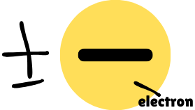
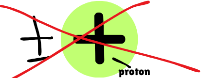

Thermosphere is also called 'Ionosphere' because it contains ions that can reflect radio waves.
Ion is an atom with a positive or negative charge.
Ions are formed due to the gain or loss of electrons.
Protons will not be gained or lost.
Positive ion is known as 'cation'.
It is formed when an atom losses electrons causing the number of protons (positive) is greater than the number of electrons (negative).
For example, Na+ (sodium losses one electron) and Mg+2 (magnesium losses two electrons).
Negative ion is called 'anion'.
It is formed when an atom gains electrons causing the number of electrons (negative) is greater than the number of protons (positive).
For example, Cl- / Chloride (chlorine gains 1 electron) and O-2 / Oxide (chlorine gains 2 electrons).
The solar radiation ionizes.
This is a process of removing the electrons from the gas atoms and molecules in the atmosphere.
When the radio waves hit the free electrons in the ionosphere, they will vibrate and the energy will be reemitted back down to the earth at the same frequency.